Détection de changement et trajectoire paysagère –
Application à l’occupation du sol au
Brésil
Nous disposons de trois images satellitaires prises au Brésil, dans
l’Etat du Mato Grosso, au sud de l’Amazonie brésilienne, où la
déforestation est importante. A titre d’illustration, d’après
l’Instituto Nacional de Pesquisas Espaciais (INPE), entre août 2017 et
juillet 2018, 22% de la déforestation totale observée au Brésil l’était
au Mato Grosso. A partir de ces images, nous souhaitons répondre à la
problématique suivante : la déforestation en Amazonie Brésilienne –
quelle(s) trajectoire(s) pour l’occupation du sol ?
Les caractéristiques des trois images à disposition sont les suivantes :
-
Image 1 :
5 bandes spectrales de résolution spectrale (multispectral), 30m de résolution
spatiale,
captées
par Landsat 5 le 24/07/1990 et en projection WGS84. L’encodage est U-INT-16 et la dimension est : 1185,
1235.
-
Image 2 :
5 bandes spectrales de résolution spectrale (multispectral), 30m de résolution
spatiale,
captées
par
Landsat 5 le 17/07/2005 et en projection WGS84. L’encodage est U-INT-16 et la dimension est : 1185, 1235.
-
Image 3 :
5 bandes spectrales de résolution spectrale (multispectral), 30m de résolution
spatiale,
captées
par Landsat 8 le 29/07/2021 et en projection WGS84. L’encodage est U-INT-16 et la dimension est : 1185,
1235.
Les bandes spectrales à disposition sont les suivantes :
- Pour les capteurs Landsat 5 (images de 1990 et 2005), nous disposons des bandes B1 (bleu), B2 (vert), B3
(rouge), B4 (infrarouge proche) et B5 (infrarouge proche)
- Pour les capteurs Landsat 8 (image de 2021), nous disposons des bandes B2 (bleu), B3 (vert), B4
(rouge), B5
(infrarouge proche) et B6 (infrarouge moyen).
1990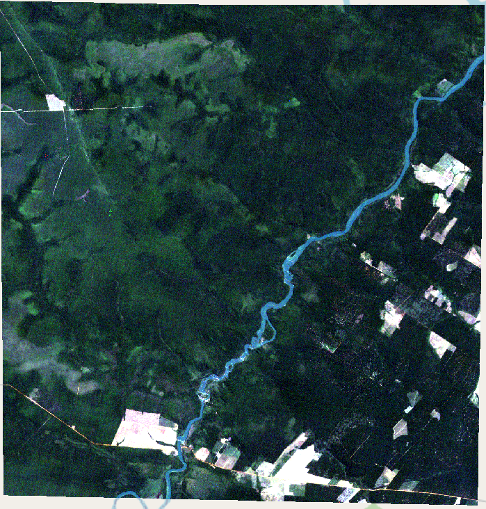
2005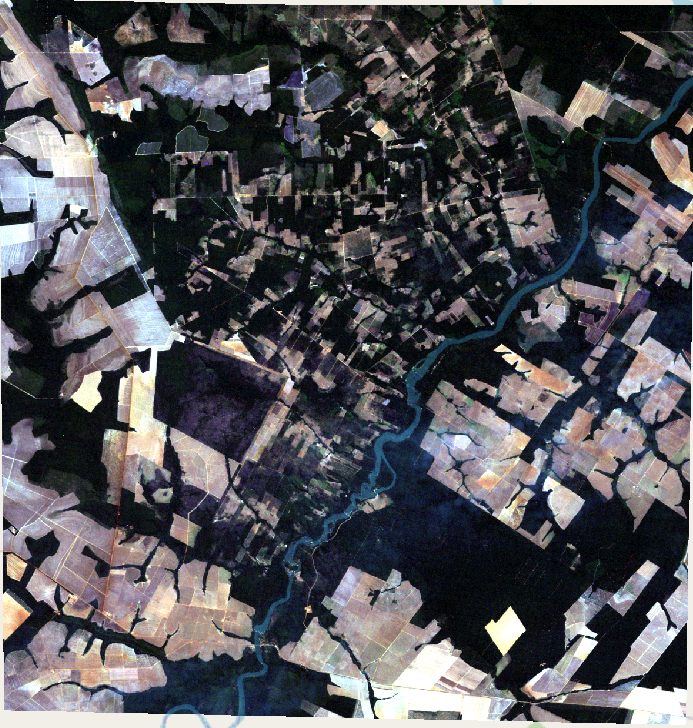
2021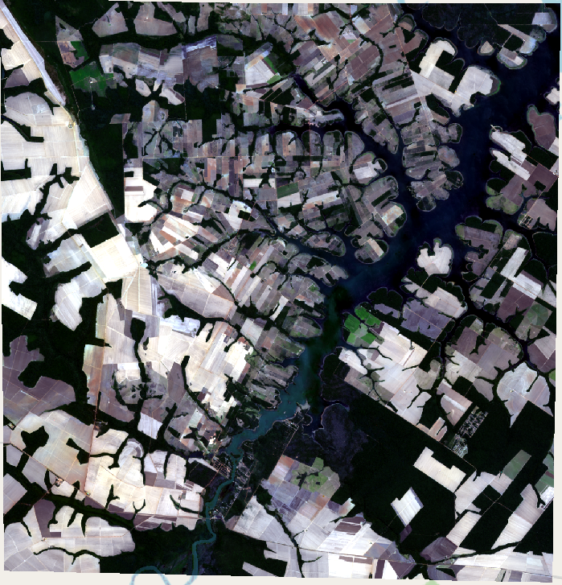
Figures 1 : Zone d’étude en 1990, 2005 et 2021 (vraies couleurs)
Etapes de l'analyse
L’objectif final de l’analyse est de produire une carte d’occupation des sols à chaque date d’image
disponible puis représenter, quantifier, spatialiser les changements.
Étant donné les images disponibles, on appuie principalement notre analyse de l’évolution de la végétation
sur les bandes rouges et proche infrarouge. Les étapes en vue de cette analyse ont été les suivantes :
- Nous avons d’abord représenté en fausses couleurs les images mises à disposition afin de mettre en
valeur les couches de végétation ;
1990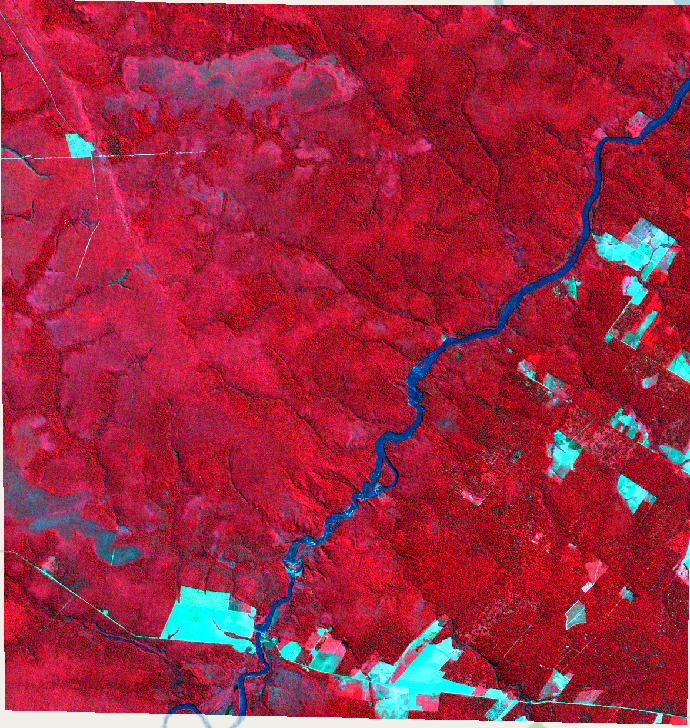
2005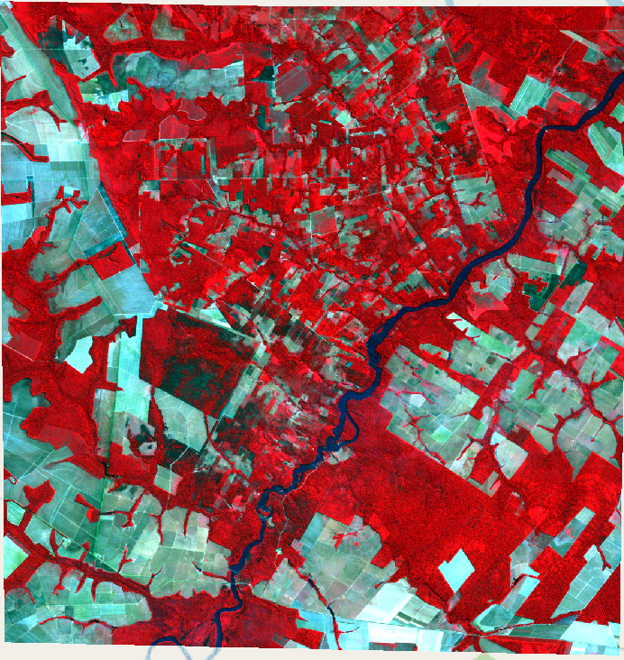
2021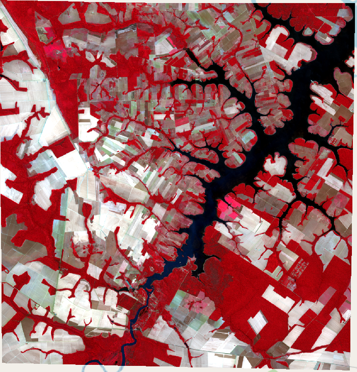
Figures 2 : Zone d’étude en 1990, 2005 et 2021 (fausses couleurs)
- Grâce à cette représentation, nous avons pu identifier a priori 3 classes d’occupation qui nous
intéressent
à savoir : forêt dense (en rouge sur les photos de la figure 2), surface d’eau (en bleu foncé sur les
photos
de la figure 2), parcelles de culture agricole ;
- Nous avons d’abord souhaité mettre en oeuvre une classification non supervisée grâce à l’outil
KmeansClassification d’OTB, mais le résultat n’était pas tout-à-fait satisfaisant : utiliser cette méthode
aurait impliqué un retraitement de la classification de sortie, notamment en joignant des classes que
l’algorithme différenciait.
- Nous avons donc préféré une classification par seuillage, sur la base d’un indice NDVI. Pour ce faire,
il
nous a fallu créer l’indice et le représenter grâce à l’outil Calculatrice raster de QGIS.
1990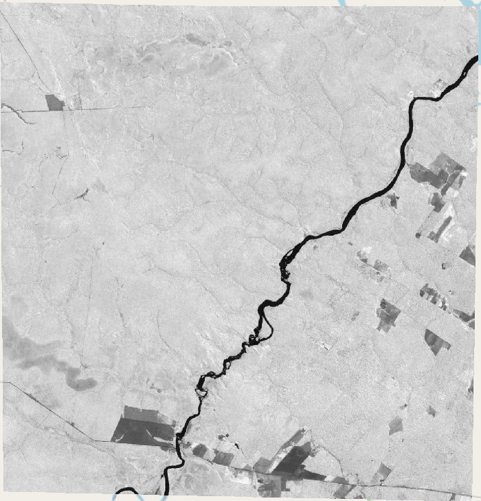
2005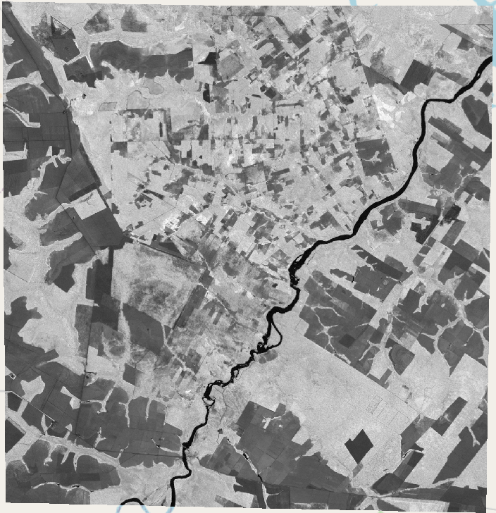
2021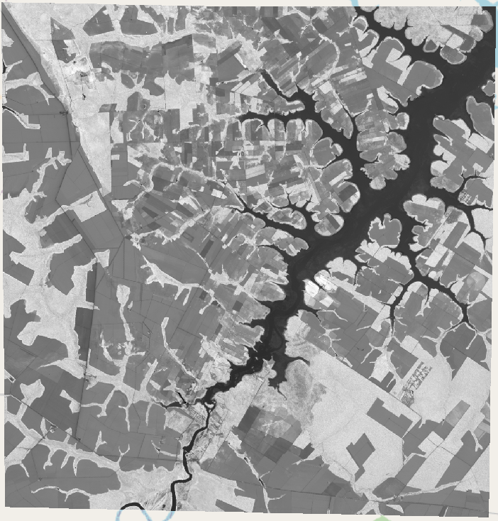
Figures 3 : Indice NDVI de la zone d’étude en 1990, 2005 et 2021
- Sur la base de cet indice NDVI, et suivant sa valeur pour chaque pixel, nous avons pu établir une
classification par seuillage afin de différencier : 1/ la forêt dense, 2/ les parcelles de culture
agricole et
3/ les surfaces d’eau.
1990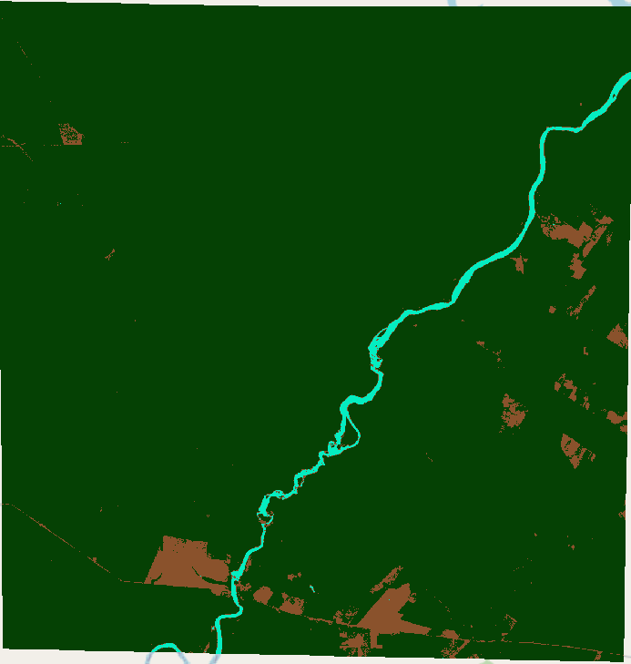
2005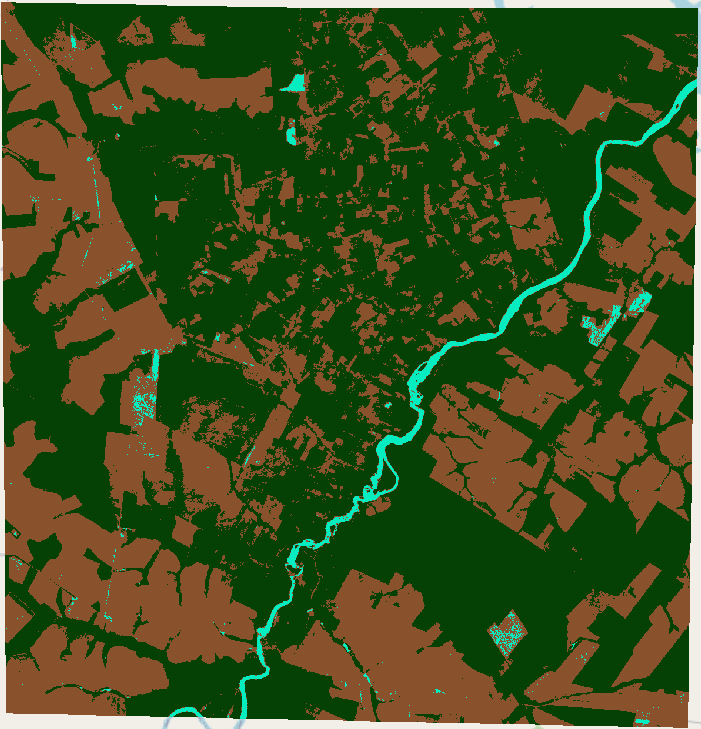
2021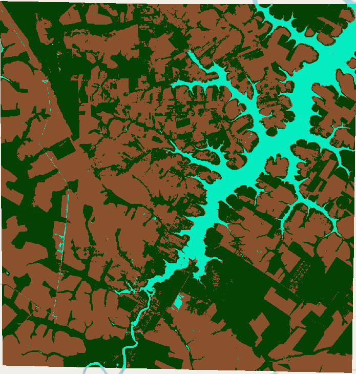
Figures 4 :Classification par seuillage de la zone d’étude en 1990, 2005 et 2021
On remarque que la classification par seuillage est moins adaptée pour l’image de Landsat 5 en 2005, étant
donné que la classification suggère la présence de surface d’eau dans une zone de forêt dense et de
parcelles
agricoles.